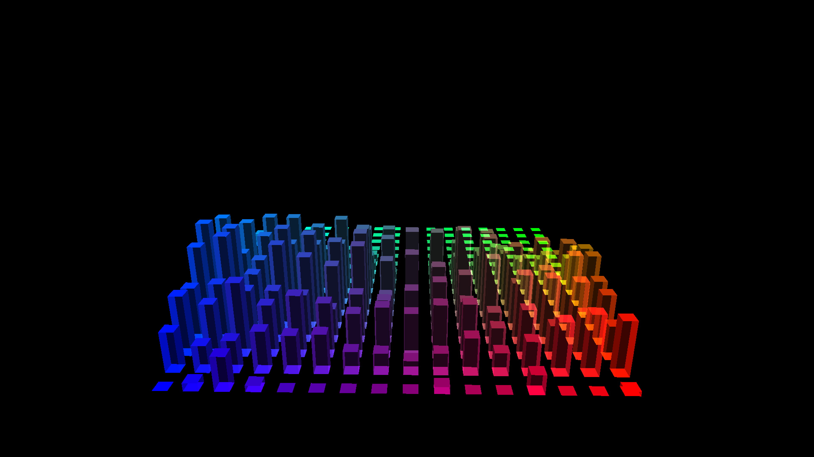
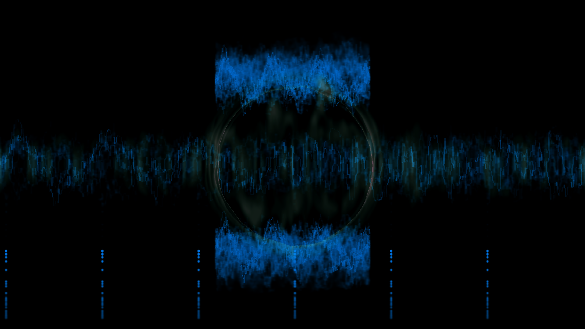

xmms2 0.9.2 is out
Tl;DR: xmms2-0.9.2 is out and you can get it at
https://github.com/xmms2/xmms2-devel/releases/tag/0.9.2!
xmms2 is still a music player
daemon with various plugins to support stream decoding and
transformation. See
previous announcement on how to
get started with xmms2.
Highlights
The guest star of this release is libvisual plugin!

Apart from that FLAC play back hangup
fix went into the release. The
rest of changes are cosmetic.
libvisual rabbit hole
In xmms2-0.9.1 libvisual plug-in did not work for me. I did not pay
attention to that until Sebastian sent the
PR #15 that fixes render
stutter when player is on pause. I was not able to verify the fix and
accepted the PR as is. The change looked reasonable. A while after
Sebastian helped me to debug problems on my system and rule out the
video subsystem.
Quiz question: why do you think libvisual did not work for me? Was it
a misconfiguration on my side? A bug in xmms2 or somewhere else in
its dependencies?
libvisual is a library to
visualize your music! If you remember the times of Media Player in
Windows 98 it's that kind of visualization.
There are various plugins that render different videos. An example may look this way: https://www.youtube.com/watch?v=cAM-lhiSYcY.
xmms2 provides xmms2-libvisual client application that you can run
and see the visualization. In theory you can just run it and
get the result:
$ xmms2-libvisual
Controls: Arrow keys switch between plugins, TAB toggles fullscreen, ESC quits.
Each plugin can has its own mouse/key bindings, too.
Note: you can give your favourite libvisual plugin as command line argument.
<hung>
But in my case nothing happened: the client app just hung.
By running strace I noticed that xmms2-libvisual used UDP
protocol to connect to server. That was unusual. I expected xmms2 to
use shared memory when ran on a local machine.
This was an xmmsclient bug: as some point build system stopped
enabling semtimedop() presence and always fell back to UDP.
Restoring semtimedop() was
easy:
we needed to set HAVE_SEMTIMEDOP define in visualization client:
--- a/src/clients/lib/xmmsclient/wscript
+++ b/src/clients/lib/xmmsclient/wscript
@@ -37,7 +37,10 @@ def build(bld):
uselib = 'socket time',
use = 'xmmsipc xmmssocket xmmsutils xmmstypes xmmsvisualization',
vnum = '6.0.0',
- defines = 'XMMSC_LOG_DOMAIN="xmmsclient"'
+ defines = [
+ 'XMMSC_LOG_DOMAIN="xmmsclient"',
+ "HAVE_SEMTIMEDOP=%d" % int(bld.env.have_semtimedop),
+ ]
)
After the fix the error changed:
$ xmms2-libvisual
Controls: Arrow keys switch between plugins, TAB toggles fullscreen, ESC quits.
Each plugin can has its own mouse/key bindings, too.
Note: you can give your favourite libvisual plugin as command line argument.
Available plugins:
Error: Actor plugin not found!
This happens because libvisual itself does not render images without
plugins. And it does not provide any default plugins. I needed to
install libvisual-plugins to get something to render!
Due to some specifics of nixpkgs there is no easy way to share plugin
load path by both libvisual and libvisual-plugins. To work it around
I added a
--libvisual-plugins flag
to be able to load it from arbitrary location.
After that I got empty window. Sebastian helped me with that by
configuring VIS output:
$ xmms2 server config effect.order.0 = visualization
And I got the video back:

Yay!
Later I returned to UDP protocol. It ought to work! I added a
bit of logging
to see if client gets anything from the server:
--- a/src/clients/lib/xmmsclient/visualization/udp.c
+++ b/src/clients/lib/xmmsclient/visualization/udp.c
@@ -21,7 +21,8 @@ udp_timediff (int32_t id, int socket) {
for (i = 0; i < 10; ++i) {
send (socket, packet, packet_d.size, 0);
}
- printf ("Syncing ");
+ printf ("Syncing UDP time ");
+ fflush (stdout);
do {
if ((recv (socket, packet, packet_d.size, 0) == packet_d.size) && (*packet_d.__unaligned_type == 'T')) {
struct timeval rtv;
@@ -45,6 +46,7 @@ udp_timediff (int32_t id, int socket) {
net2ts (packet_d.serverstamp), net2ts (packet_d.clientstamp), tv2ts (&time));
end of debug */
putchar('.');
+ fflush (stdout);
}
} while (diffc < 10);
free (packet);
fflush () confirmed that server did not answer to client's requests:
$ xmms2-libvisual
...
Syncing UDP time <cursror here>
This hangup happens due to an interesting case of handling dual-stack
IPv4+IPv6 setup this machine has:
- clients usually try to connect to
IPv4first, thenIPv6(following sequence ofgetaddrinfo()results) - servers on the other hand try to bind to
IPv4first, thenIPv6.
As a result IPv6 client was failing to connect IPv4 server on the
same machine.
The fix is straightforward: server should bind not to the first
getaddrinfo() address, but all the getaddrinfo() addresses. The only
caveat is that binding on IPv6+IPv4 fails if IPv4 was already bound.
Setting IPV6_V6ONLY allowed disabling dual-stack default on bound
socket.
The change is a bit long as it added support for multiple server sockets in the event loop. Its gist is around:
--- a/src/xmms/visualization/udp.c
+++ b/src/xmms/visualization/udp.c
@@ -122,41 +119,76 @@ init_udp (xmms_visualization_t *vis, int32_t id, xmms_error_t *err)
hints.ai_flags = AI_PASSIVE;
hints.ai_protocol = 0;
if ((s = getaddrinfo (NULL, G_STRINGIFY (XMMS_DEFAULT_UDP_PORT), &hints, &result)) != 0)
// ...
+ for (rp = result; rp != NULL; rp = rp->ai_next) {
+ int sock;
+ xmms_vis_server_t *s = &servers[opened_servers];
+
+ sock = socket (rp->ai_family, rp->ai_socktype, rp->ai_protocol);
+ if (!xmms_socket_valid (sock)) {
continue;
}
- if (bind (vis->socket, rp->ai_addr, rp->ai_addrlen) != -1) {
- break;
- } else {
- close (vis->socket);
+ if (bind (sock, rp->ai_addr, rp->ai_addrlen) == -1) {
+ /* In case we already bound v4 socket
+ * and v6 are attempting to set up
+ * dual-stack v4+v6. Try again v6-only
+ * mode. */
+ if (rp->ai_family == AF_INET6 && errno == EADDRINUSE) {
+ int v6only = 1;
+ if (setsockopt (sock, IPPROTO_IPV6, IPV6_V6ONLY, &v6only, sizeof (v6only)) == -1) {
+ close (socket);
+ continue;
+ }
+ if (bind (sock, rp->ai_addr, rp->ai_addrlen) == -1) {
+ close (socket);
+ continue;
+ }
After the change I got working visualization over UDP as well.
libvisual UDP protocol
While debugging stuck visualization stream I got the following picture
of how visual UDP clients are expected to interact with xmms2
server on the wire level:
- First
xmms2-libvisualconnects overTCP(orUNIXsocket) toxmms2server using standardXMMS_PATHenvironment variable. Let's call it "control channel" socket. - Then over "control channel" client sends a
visualization.register()RPC and gets the numeric ID back. At this point client does not know if it's anSHMorUDPtransport. - Then client tries to open an
SHMobject with this numeric ID by sendingvisualization.init_shm(id)RPC. If it fails client falls back to tryUDPinstead. - The client sends
visualization.init_udp(id)RPC. - As a response to client RPC server opens
UDPsocket on a fixed9667port and waits for incoming messages.
Now client and server are ready to negotiate VIS-specific UDP channel.
There are a few types of messages that pass around:
- 'H' message (heartbeat):
"H<id>"(5 bytes) - 'V' message (data):
"V<grace><server-ts><size><samples>"(up to 4k) - 'T' message (sync):
"T<id><cilent-ts><server-ts>"(21 bytes) - 'K' message (disconnect):
"K"(1 byte)
Timestamps are 8 bytes long and consist of a par of 2 values:
4 bytes for seconds and 4 bytes for nanoseconds. Each data sample is a
16-bit value. Usually of PCM format.
UDP side of the protocol looks like that:
- client -> server: sends
"H<id>"packet to announce it's presence. - client -> server: sends
"T<id><client-ts><server-ts>"to synchronize time difference and start tracking client staleness. - server -> client: responds with the same
"T<id><client-ts><server-ts>"type of packet. - server -> client: periodically send
"V<server-ts><format><size><samples>"data where 'samples' contain an array of PCM values, usually 2048 entries. For 44100Hz that would cover for about 20ms of data. - server -> client: Eventually client stops sending sync messages ('T')
and server sends
"K"message and cleans up client handling.
It's not a very robust or secure protocol. But it's so simple. It allows for multiple parallel visualization clients to co-exist.
Parting words
xmms2 is back with libvisual support! VIS protocol is not very
complicated.
To answer the quiz question above the problem was in all the listed cases:
xmms2did not useUNIXSHMforvisualizationand fell back toUDPxmms2did not bind to bothIPv4+IPv6sockets on dual-stack system.nixpkgsdid not providelibvisual-pluginsin any form. A required dependency to show anything.- I did not configure
xmms2server to have avisualizationsink.
After fixing all the above I hope more people will be able to play
with libvisual.
Have fun!